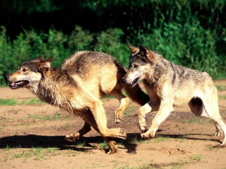

Lobos
Los lobos son carnívoros altamente adaptados al entorno donde viven, son los más grandes de la familia de los caninos, pudiendo variar considerablemente en tamaño en dependencia su distribución y especie. El peso de un lobo adulto puede variar de 50 a 200 libras y desde 4.5 pies hasta 6 pies de longitud desde la punta de la nariz hasta el extremo de la cola.

Por mucho tiempo los lobos han tenido mala reputación en el medio silvestre en donde viven. Son animales muy inteligentes y viven en manadas, tienen un pelaje grueso que los ayuda a sobrevivir en una gran variedad de climas. Se encuentran viviendo en muchos lugares del hemisferio norte, sin embargo, estos lugares se hacen más espaciados y pequeños todo el tiempo.
Los lobos viven en manadas, una manada puede tener de 6 a 20 miembros. Estos animales necesitan de grandes territorios que pueden abarcar hasta 15 millas. Los lobos cazan en grupos y esto hace que puedan derribar a grandes presas, como los alces. Este tipo de alimento asegura bastante comida para repartir entre todo el grupo.
Aparte de cazar las presas para alimentarse, los lobos no suelen ser animales agresivos, sin embargo, lucharán con otros animales, e incluso con otros lobos, con el fin de proteger a sus mandas. Aquí es donde vienen las historias de los lobos asesinos y violentos. En estos momentos la mayor amenaza para estos animales son los seres humanos. La reducción del hábitat de los lobos ha creado grandes dificultades para ellos.
El promedio de vida de un lobo en su hábitat natural es de 6 a 8 años. Sin embargo, en cautiverio pueden vivir hasta 16 años. Estos animales no tienen problemas de adaptación cuando están en cautiverio, en la mayoría de estos lugares tratan de mantener un hábitat tan natural como les sea posible. La comercialización de las pieles de lobos es ilegal en muchos lugares, sin embargo, siguen siendo comercializadas en el mercado negro por grandes sumas de dinero.
Tal vez le resulte sorprendente saber que en los Estados Unidos los lobos fueron cazados hasta el punto de la extinción y en la década de 1980 llegó un momento en que los lobos rojos fueron eliminados en la naturaleza. Programas de mejoramiento con los lobos rojos, han permitido empezar a repoblar las distintas zonas donde estos animales vivían . Para los lobos que viven en California del Norte, existen programas para adentrarlos a nuevos ambientes, hoy en día aproximadamente 100 de estos animales se encuentran en estas zonas.
Actualmente existen varias especies de lobos consideradas en peligro de extinción. En algunas zonas se han protegido con el fin de ayudar a reducir los riesgos que hacen que se extingan. Se han hecho esfuerzos en Colorado y en otros estados para reintroducir algunas especies. Hasta el momento estos programas han tenido éxito. Sin embargo, no es suficiente para ayudar a los lobos a estar fuera de las listas de especies en peligro de extinción.
Los lobos tienen una estructura social muy compleja y han sido estudiados por mucho tiempo, existen jerarquías diferentes para los machos y las hembras. Contrario a la creencia popular no están todo el tiempo peleando para llegar al tope de esta jerarquía, en cambio, este tipo de estructura social ayuda a mantener la supervivencia de todo el grupo.